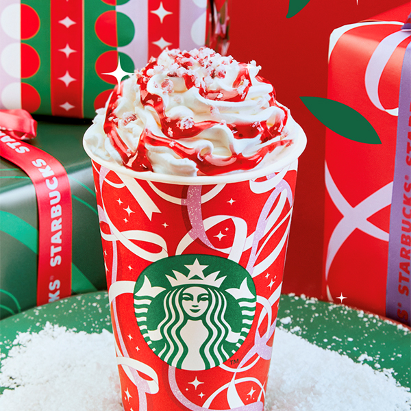

TUFF NUT UN SABOR NAVIDEÑO DE STARBUCKS
Bienvenidos al mundo mágico de los cafés navideños de Starbucks! La experiencia de probar estos exquisitos brebajes es como sumergirse en un festín de sabores y aromas que capturan la esencia misma de la temporada festiva.
La calidad de los granos de café en estos cafés navideños es innegablemente sublime. Cada sorbo es una obra maestra de tueste perfecto, un arte que Starbucks ha perfeccionado para llevar a tu taza la esencia pura del café. Es un viaje sensorial desde el momento en que inhalas el aroma cautivador hasta el último sorbo que acaricia tu paladar.
Lo que hace que estos cafés sean verdaderamente especiales es la introducción de sabores únicos y característicos de la temporada navideña. Starbucks ha reinventado con maestría sus típicos cafés, infundiéndolos con notas cautivadoras que evocan la magia de la Navidad. ¿Te imaginas una fusión de canela y vainilla acariciando tu lengua, o tal vez un toque sutil de nuez moscada que te transporta directamente a la época más maravillosa del año?
Cada taza es como un regalo para tus sentidos, un recordatorio de que la Navidad ha llegado y está aquí para quedarse mientras disfrutas de estas creaciones únicas. La colección no solo es una indulgencia para los amantes del café, sino también una invitación a sumergirse en el espíritu festivo con cada sorbo.
Así que, si eres un amante del café y ansías algo más que la rutina diaria, no puedes dejar de probar estos cafés navideños de Starbucks. Es una experiencia que va más allá de la simple cafeína; es un viaje de sabores, aromas y emociones que te harán desear que la Navidad dure todo el año. ¡Deleita tu paladar con esta obra maestra de la temporada y descubre la magia en cada taza!